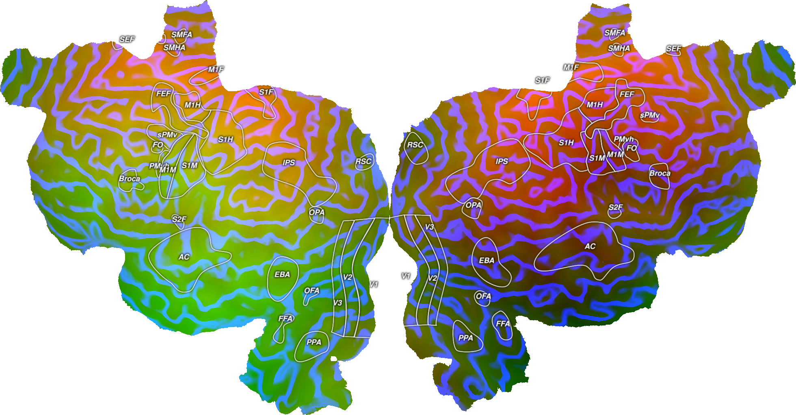
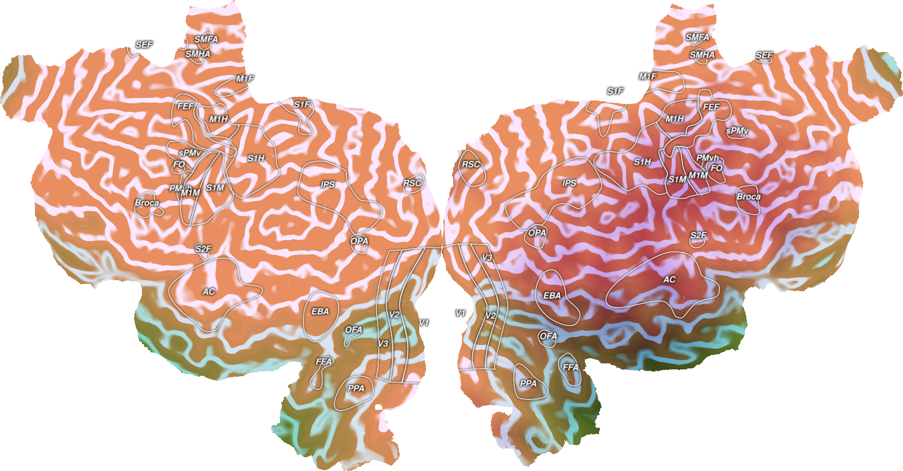

Note
Click here to download the full example code
Plot RGB Volume Data¶
This plots an example RGB dataset onto an example subject, S1, onto a flatmap using quickflat. In order for this to run, you have to a have a flatmap for this subject in the pycortex filestore.
The cortex.VolumeRGB object is instantiated with three cortex.Volume objects, one for each of the three color channels. Ideally, the data in the Volume objects will be scaled to be between 0-255 and be np.uint8 type. The objects can also be 1D numpy arrays of equal sizes, in which case the subject and transform will need to be given as arguments.
Here, two datasets are generated to look like gradients across the brain and a third dataset makes a series of stripes across the brain.
By default, VolumeRGB maps each data channels on to the red, green, and blue channels in RGB color space. You can also specify custom colors for each data channel, and the colors will be linearly combined. Custom colors can be specified by the channel1color, channel2color, and channel2color arguments, using 3-ples of uint8 to specify RGB colors for each data channel. cortex.Colors provides a set of named colors that can be used.
Also by default, each data channel is normalized separately on to its respective color. Doing so is not necessarily good for quantitative comparisons in cases in which the range of values in each data channel differs. The argument shared_range, if set to True, will force all three data channels to be on the same scale for equitable comparisons. When shared_range is true, the arguments shared_vmin and shared_vmax` will allow you to specify minimum and maximum values manually.
- 
- 
Out:
Failed to get connection
** (inkscape:5180): CRITICAL **: 01:27:25.026: dbus_g_proxy_new_for_name: assertion 'connection != NULL' failed
** (inkscape:5180): CRITICAL **: 01:27:25.026: dbus_g_proxy_call: assertion 'DBUS_IS_G_PROXY (proxy)' failed
** (inkscape:5180): CRITICAL **: 01:27:25.026: dbus_g_connection_register_g_object: assertion 'connection != NULL' failed
Failed to get connection
** (inkscape:5192): CRITICAL **: 01:27:31.612: dbus_g_proxy_new_for_name: assertion 'connection != NULL' failed
** (inkscape:5192): CRITICAL **: 01:27:31.612: dbus_g_proxy_call: assertion 'DBUS_IS_G_PROXY (proxy)' failed
** (inkscape:5192): CRITICAL **: 01:27:31.612: dbus_g_connection_register_g_object: assertion 'connection != NULL' failed
Failed to get connection
** (inkscape:5202): CRITICAL **: 01:27:38.226: dbus_g_proxy_new_for_name: assertion 'connection != NULL' failed
** (inkscape:5202): CRITICAL **: 01:27:38.227: dbus_g_proxy_call: assertion 'DBUS_IS_G_PROXY (proxy)' failed
** (inkscape:5202): CRITICAL **: 01:27:38.227: dbus_g_connection_register_g_object: assertion 'connection != NULL' failed
import cortex
import numpy as np
import matplotlib.pyplot as plt
subject = "S1"
xfm = "fullhead"
# Creating three test datasets that are the same shape as this transform with
# one entry for this voxel
# The first two are gradients going in different directions across the brain
# and the third is stripes across certain slices of the brain
test1 = np.arange(31. * 100 * 100).reshape((31, 100, 100), order='C')
test2 = np.arange(31. * 100 * 100).reshape((31, 100, 100), order='F')
test3 = np.zeros((31, 100, 100))
test3[::3, :, :] = 1
# Scaling the three datasets to be between 0-255
test1_scaled = test1 / np.max(test1) * 255
test2_scaled = test2 / np.max(test2) * 255
test3_scaled = test3 / np.max(test3) * 255
# Creating three cortex.Volume objects with the test data as np.uint8
red = cortex.Volume(test1_scaled.astype(np.uint8), 'S1', 'fullhead')
green = cortex.Volume(test2_scaled.astype(np.uint8), 'S1', 'fullhead')
blue = cortex.Volume(test3_scaled.astype(np.uint8), 'S1', 'fullhead')
# This creates an RGB Volume from the three different color channels for
# this subject using the default RGB mappings
# Note that you do not need to specify the transform when creating this as it
# is already specified in the red, green, and blue channels
vol_data = cortex.VolumeRGB(red, green, blue, subject)
cortex.quickshow(vol_data, with_colorbar=False)
plt.show()
# This creates an RGB Volume from the three different color channels for
# this subject using custom colors.
# Note that you do not need to specify the transform when creating this as it
# is already specified in the red, green, and blue channels
vol_data = cortex.VolumeRGB(red, green, blue, subject,
channel1color=cortex.Colors.RoseRed,
channel2color=cortex.Colors.LimeGreen,
channel3color=cortex.Colors.DodgerBlue)
cortex.quickshow(vol_data, with_colorbar=False)
plt.show()
# This creates an RGB Volume from the three different color channels for
# this subject using custom colors, and shared value ranges.
# Note that you do not need to specify the transform when creating this as it
# is already specified in the red, green, and blue channels
vol_data = cortex.VolumeRGB(red, green, blue, subject,
channel1color=cortex.Colors.RoseRed,
channel2color=cortex.Colors.LimeGreen,
channel3color=cortex.Colors.DodgerBlue,
shared_range=True, shared_vmin=10, shared_vmax=100)
cortex.quickshow(vol_data, with_colorbar=False)
plt.show()
Total running time of the script: ( 0 minutes 17.227 seconds)